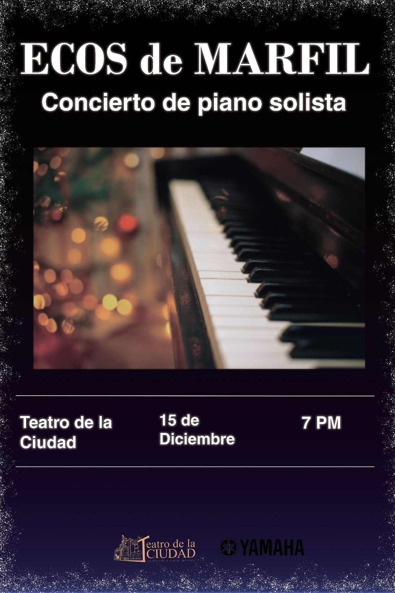
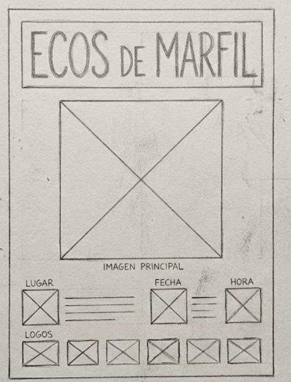
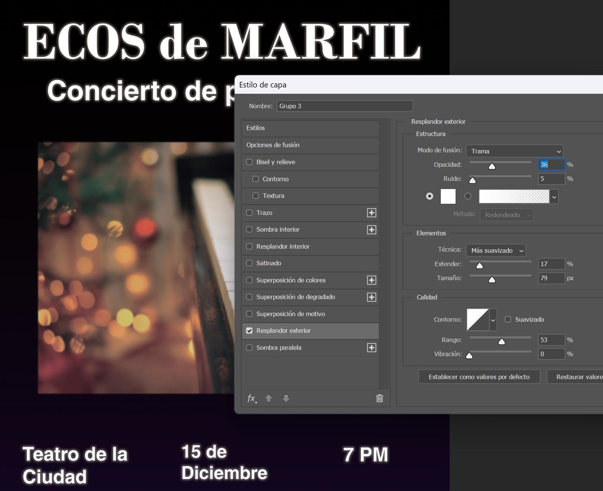

Cartel · 2025
Ecos de Marfil
Cartel para un concierto de piano solista
- Contexto
- Manipulación Digital, UVM
- Fecha
- diciembre de 2025
- Mi rol
- Boceto, retícula, composición y tratamiento de imagen
- Herramientas
- Adobe Photoshop

El reto
Transmitir elegancia, emoción y modernidad para un concierto de piano (evento ficticio) y atraer tanto a conocedores como a nuevos oyentes.
Proceso
Partí de un boceto a mano con retícula modular. En Photoshop configuré el documento para impresión (40 × 60 cm, CMYK, 300 ppp) y construí un fondo degradado de negro a azul frío que simula una noche de invierno.
Para integrar la fotografía del piano usé una doble exposición: dupliqué la capa, le apliqué desenfoque gaussiano y ajusté la opacidad y el modo de fusión para lograr un resplandor difuso sobre las teclas. Cerré con la tipografía en dos niveles y partículas de nieve hechas con pinceles.
Resultado
Un cartel con formato de impresión (40 × 60 cm, CMYK, 300 ppp) en el que la imagen, la tipografía y la información siguen la misma retícula del boceto.

